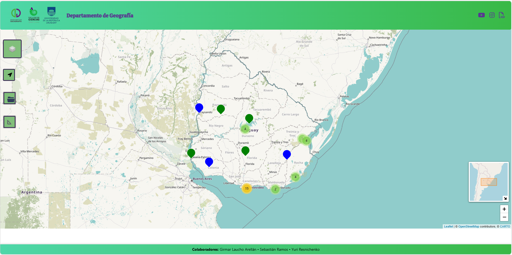
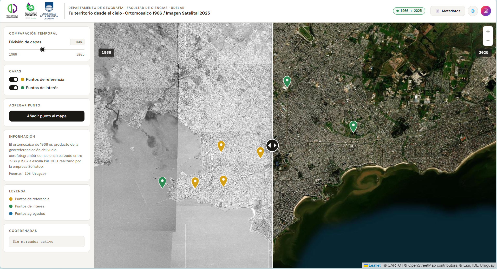
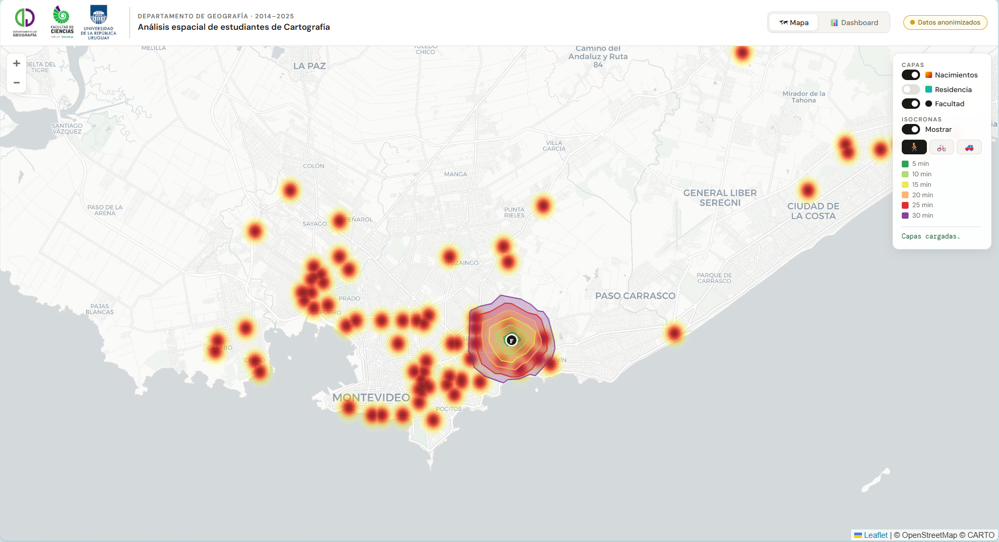

ViGeografía reúne una colección de visualizadores desarrollados por el Departamento de Geografía de la Facultad de Ciencias. Este espacio digital permite acceder a trabajos académicos, investigaciones y proyectos que aplican enfoques geográficos mediante herramientas interactivas orientadas al análisis y la comprensión del territorio.

Explora los trabajos finales de grado dirigidos por docentes del Departamento de Geografía mediante visualizadores interactivos que facilitan la consulta de sus principales características.
Tesis de estudiantes de geografía Ir al visualizador
Aplicaciones que muestran cómo los enfoques y herramientas geográficas permiten analizar, interpretar y comunicar fenómenos territoriales mediante visualizaciones interactivas aplicadas a casos concretos.
Cambios del Territorio (Ortomosaico 1966 - Imagen Satelital 2025) Ir al visualizador Localización Óptima de una biblioteca en Montevideo Ir al visualizador ¿De dónde vienen nuestros mundialistas? Ir al visualizador
Accede a proyectos de investigación desarrollados por el Departamento de Geografía donde se abordan diversas problemáticas territoriales.
Casavalle Ir al visualizador Movilidad de los estudiantes de Cartografía Ir al visualizador